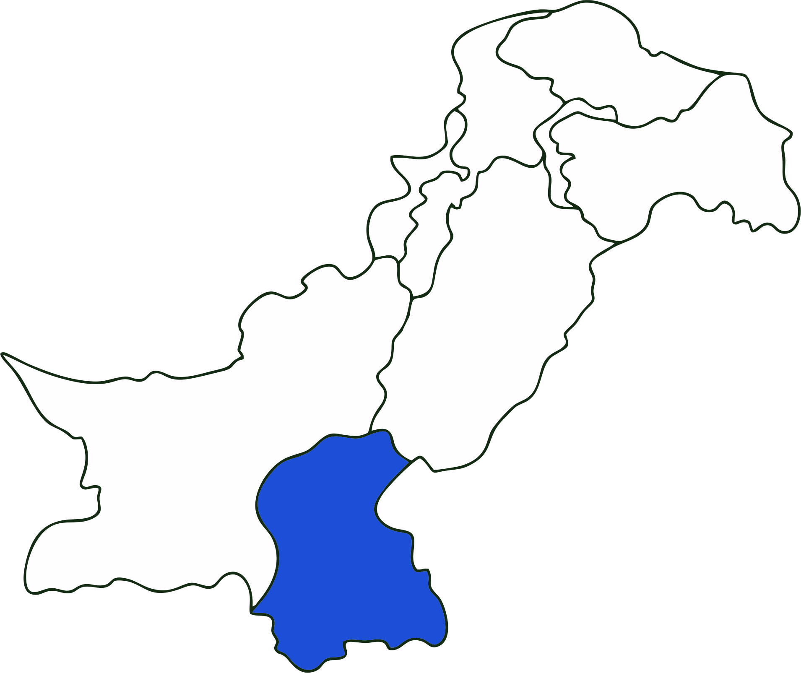

Provincial Flag

Government Emblem

Location

Overview
Land of Sufis
Sindh is the second-largest province of Pakistan by population and serves as the country's economic hub. It is historically known as the "Mehran" and has been the seat of the Indus Valley Civilization for thousands of years.
Home to the bustling metropolis of Karachi, Sindh is a land of contrasts—from the fertile plains of the Indus to the arid Thar Desert and the pristine coastline of the Arabian Sea. It is deeply rooted in Sufi mysticism, tolerance, and rich folklore.